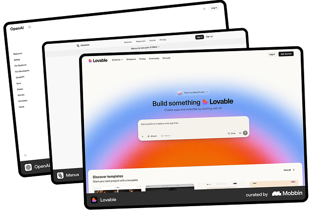
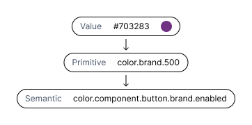
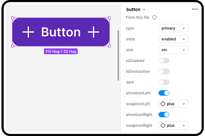
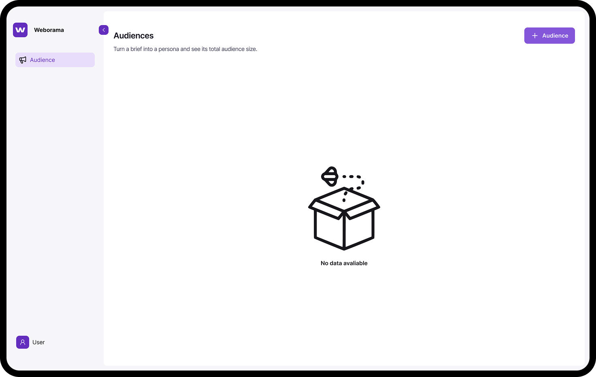
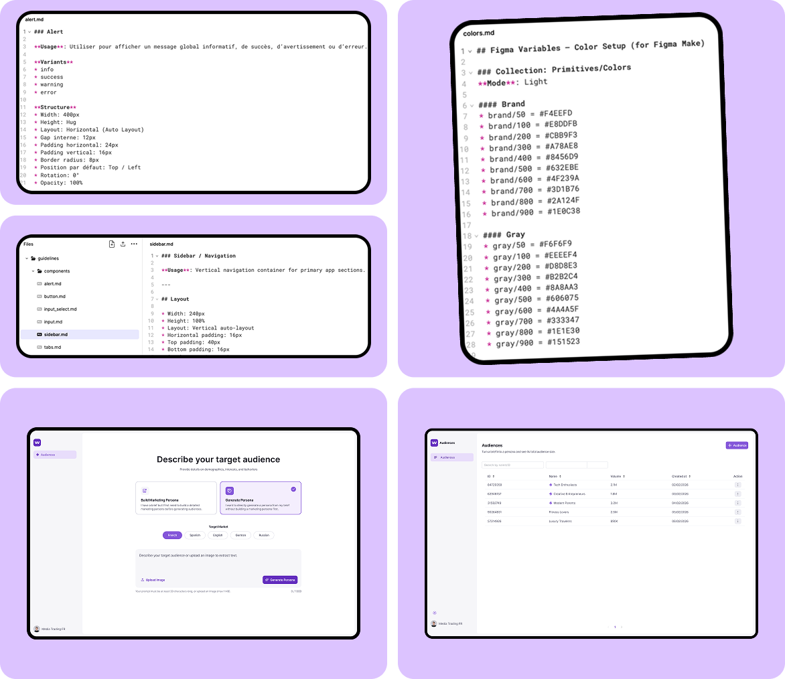

Product Designer · Weborama — AdTech SaaS · 16 mois · Figma · Zeroheight · Storybook · Figma Make
Weborama est une AdTech spécialisée dans la data et l'IA sémantique. Ma mission couvre deux axes : rationaliser le Design System des 4 applications existantes, puis concevoir une nouvelle application SaaS avec un process « AI Ready » permettant de générer des prototypes haute-fidélité via Figma Make.
2
Design Systems livrés
−80%
de composants après rationalisation
4
équipes alignées sur une source unique
100%
prototypes IA conformes au Design System
Contexte
Deux missions, une continuité
Weborama développait 4 outils SaaS sans Design System commun — incohérences visuelles, friction entre designers et développeurs, livraison ralentie. J'ai d'abord audité l'existant et conçu un Design System unifié pour les 4 applications.
Dans un second temps, Weborama souhaitait lancer un nouvel outil SaaS à partir d'explorations menées par les équipes Produit et Commerciales via Figma Make. Ces prototypes constituaient une base solide, mais nécessitaient une conception UX structurée et un Design System dédié.
J'ai pris en charge l'ensemble de la conception de la nouvelle application — de l'audit UX jusqu'à la synchronisation du Design System avec Figma Make — en tant que designer principal, en reportant au Lead Designer.
01 — Audit
État des lieux : 4 bibliothèques, zéro cohérence
J'ai audité l'ensemble des 4 bibliothèques Figma : 974 composants, 44 variables et 14 variations de couleur. Chaque application avait évolué indépendamment — les mêmes composants existaient en plusieurs versions incompatibles, les conventions de nommage divergeaient, et les développeurs ne savaient plus quelle version implémenter.
J'ai piloté des ateliers réunissant 3 designers et jusqu'à 3 développeurs pour statuer sur chaque composant : garder, fusionner ou supprimer. Ces sessions avaient aussi un objectif d'évangélisation — Atomic Design, tokens, variables — pour que l'adoption du futur DS soit durable.
974 composants audités sur 4 applications
11 composants en doublon identifiés comme point de départ
−80% de composants après rationalisation
Cartographie des composants existants — état avant
02 — Design System
Un Design System unifié pour les 4 applications
Fort des décisions prises en atelier, j'ai conçu le nouveau Design System de zéro selon les principes de l'Atomic Design. L'objectif : une source de vérité unique pour les 4 applications, partagée design et développement.
Fondations — palettes avec 4 modes (un par application), typographies, espacements, bibliothèque d'icônes commune. 175 variables organisées en 5 collections : Primitives, Colors, Spacing, Typography, Border.
Composants — 24 composants déclinés en 195 variants, du plus atomique au plus complexe, connectés aux variables sémantiques. Templates — 7 templates réutilisables pour produire des interfaces conformes plus rapidement. Ces templates serviront directement de base pour concevoir de nouvelles fonctionnalités.
La documentation est centralisée dans Zeroheight (design) et Storybook (développement), assurant l'alignement durable entre les deux équipes.
24 composants · 195 variants connectés aux variables sémantiques
175 variables en 5 collections · 4 modes de couleurs
7 templates réutilisables
100% documentés dans Zeroheight et Storybook
Design System unifié — variables, composants et templates
03 — Fonctionnalités
Le DS comme accélérateur de conception
Le Design System n'est pas une fin en soi — c'est un accélérateur. Avec les fondations en place et les templates disponibles, la conception de nouvelles fonctionnalités est devenue plus rapide et plus cohérente.
Exemple concret : la conception d'un flux unifié pour exporter des datasets vers des destinations externes (S3, Yandex…). Le parcours se déroule en deux étapes : créer une destination réutilisable, puis configurer un transfert avec contrôle fin des colonnes. Zéro outil tiers — tout dans le Data Hub.
Les templates existants du DS ont fourni les patterns de formulaire, les états de validation et les composants de configuration. La conception s'est concentrée sur le parcours et la logique fonctionnelle, pas sur les briques de base — déjà définies, testées, documentées.
Parcours conçu en 2 étapes claires et cohérentes
Templates du DS réutilisés directement — aucune brique à recréer
Contrôle fin des colonnes sans quitter l'application
Zéro outil tiers nécessaire
Flux d'export de datasets — conçu avec les templates du DS
04 — UX Research
Comprendre avant de concevoir
Weborama souhaitait lancer une nouvelle application SaaS à partir d'explorations générées par les équipes Produit et Commerciales via Figma Make. Ces prototypes constituaient une base de travail, mais nécessitaient une démarche UX structurée avant d'aller plus loin.
J'ai mené une phase de recherche complète : analyse des prototypes existants pour identifier les frictions, benchmark des outils concurrents pour cadrer les standards attendus, puis conception du parcours utilisateur final. Chaque décision de conception s'appuie sur ces insights.
Analyse des prototypes PO & BU — frictions identifiées, opportunités définies
Benchmark des conventions UX du marché
Parcours utilisateur conçu et validé avec les équipes
100% des propositions acceptées par les équipes Produit et Commerciale
3 écrans supprimés — complexité réduite sans perte de fonctionnalité
Analyse des parcours & frictions

Benchmark concurrentiel
05 — Design System
Un Design System pensé pour l'IA
J'ai conçu le Design System de la nouvelle application avec un double objectif : fournir une base solide pour les équipes design et dev, et être nativement compatible avec Figma Make pour accélérer l'idéation par l'IA.
ÉTAPE 01
Variables & tokens
Variables définies en deux modes (clair et sombre). 4 collections de tokens sémantiques : colors, spacing, radius, typography. Chaque token est nommé selon une convention stricte, lisible par l'IA comme par les développeurs.
ÉTAPE 02
Composants & variants
8 composants conçus selon l'Atomic Design — des atomes aux organismes. Chaque composant intègre ses tokens, ses états et ses variants. L'accessibilité est intégrée dès les fondations.
ÉTAPE 03
Templates
2 templates réutilisables conçus pour produire des interfaces cohérentes rapidement — et directement exploitables dans Figma Make pour générer des écrans haute-fidélité.
ÉTAPE 04
Validation dans Storybook
Chaque composant est validé avec l'équipe de développement dans Storybook : comportements, états, tokens implémentés. Ce processus garantit la cohérence entre le DS Figma et l'implémentation front.
8 composants · 4 collections de tokens · 2 modes light / dark
2 templates optimisés pour Figma Make
Validé en Storybook avec l'équipe dev

Variables & tokens sémantiques

Composants & variants

Templates & validation Storybook
06 — Process IA Ready
Implémenter la connaissance du DS dans l'IA
Un Design System bien conçu ne suffit pas à cadrer l'IA — il faut lui transmettre la connaissance. J'ai mis en place un process en deux temps pour que Figma Make génère des prototypes directement fidèles au Design System, sans intervention manuelle.
ÉTAPE 01
Préparation des maquettes
Protocole strict avant synchronisation : nommage des frames, auto-layout, gestion des scrolls (clip content), utilisation exclusive des composants et variables publiés. La bibliothèque est ensuite synchronisée avec Figma Make.
ÉTAPE 02
Implémentation du knowledge dans le code Figma Make
J'ai intégré la connaissance du Design System directement dans le code de Figma Make via des fichiers markdown : un fichier principal guidelines.md, des fichiers dédiés par composant (button.md, input.md…) et un dossier tokens (colors.md, spacing.md). L'IA dispose ainsi des règles d'usage, des contraintes de style et des tokens pour chaque génération.
1 guidelines.md — point d'entrée unique pour cadrer l'IA
8 fichiers composants documentés avec usage, tokens et variants
4 collections de tokens structurées pour la lecture par l'IA
100% des prototypes générés conformes au Design System

Préparation & synchronisation Figma Make
Implémentation du knowledge dans le code
07 — Fonctionnalités IA
Concevoir de nouvelles fonctionnalités avec l'IA
Le process IA Ready en place, Figma Make génère des prototypes alignés avec le DS dès le premier prompt. Les explorations sont rapides, cohérentes et directement présentables aux équipes. C'est sur cette base que j'ai pu concevoir de nouvelles fonctionnalités ambitieuses.
Exemple : la génération d'audience par IA à partir d'un brief en langage naturel. L'utilisateur décrit sa cible en quelques mots. L'IA produit une persona, estime le volume d'audience (ex. 2,1M) et génère les règles de segmentation WAM prêtes à l'emploi — directement dans l'interface, sans outil tiers.
Cette fonctionnalité a été idéée, maquettée et itérée entièrement via Figma Make, en s'appuyant sur les composants et templates du DS. Le time-to-prototype est passé de plusieurs jours à quelques heures.
Génération d'audience IA depuis un brief en langage naturel
Persona + volume estimé + règles WAM générés automatiquement
Zéro outil tiers — tout dans l'interface
Time-to-prototype réduit grâce au process IA Ready
4 équipes alignées sur le process — PO, BU, Design, Dev
Idéation via Figma Make
Génération d'audience par IA
Recommandation
★★★★★
« En tant que Product Designer, Thomas a su faire de l'IA un véritable allié stratégique, l'intégrant avec maîtrise dans ses méthodes de conception pour créer des produits plus intelligents, optimiser les parcours utilisateurs et renforcer durablement la performance des produits Weborama. »